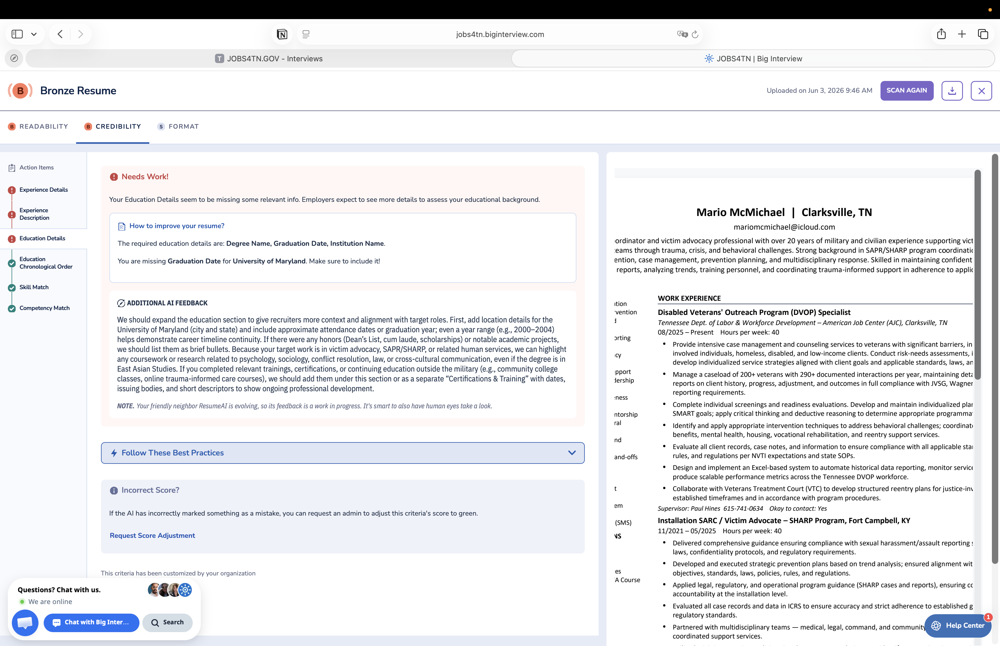
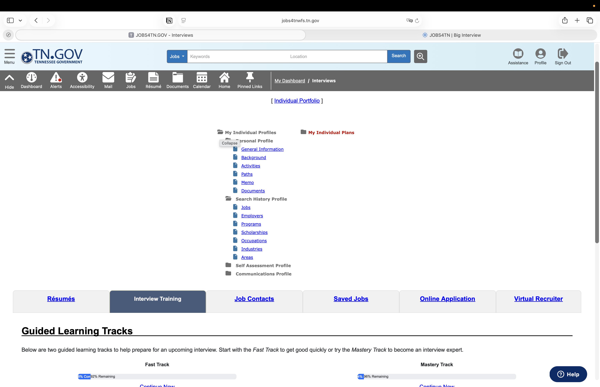
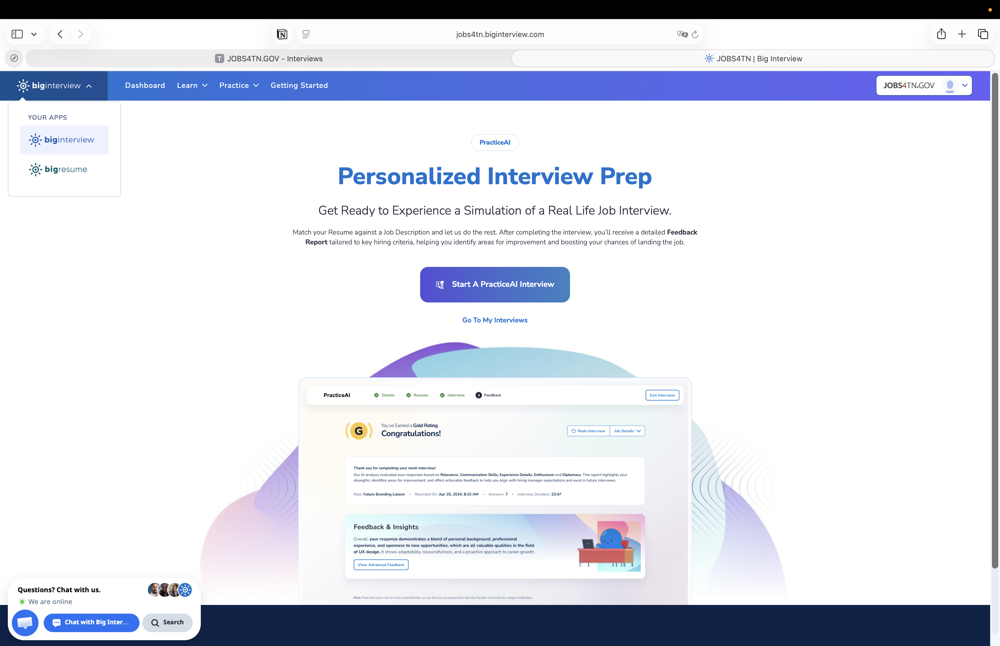

✓
Resume review guidance
Big Resume scans your resume and gives suggestions on readability, credibility, formatting, missing details, skill match, and competency match.
Jobs4TN gives account holders free access to Big Interview tools for resume review, job interview preparation, AI-powered mock interviews, and feedback that helps job seekers explain their experience with confidence.
Included with a Jobs4TN account.
Upload a resume and job posting to build a targeted mock interview.
Practice when you have time, before the pressure is real.
Big Interview for interview prep and Big Resume for resume review.
The service helps job seekers move from “I know my experience” to “I can clearly explain my experience for this specific job.”
Big Resume scans your resume and gives suggestions on readability, credibility, formatting, missing details, skill match, and competency match.
Guided learning tracks help users quickly review common interview skills, then keep practicing until their answers feel natural.
Upload the job posting and your resume so the AI interview can align questions and closing responses with the actual role.
Users can work through areas that need improvement without feeling rushed, then try again after reviewing feedback.
The tool can show how to rephrase, simplify, and strengthen answers to difficult interview questions.
Practice helps users highlight real skills, work history, accomplishments, and transferable experience during the interview.
The key feature is the personalized interview prep section. It compares your resume to a job description, creates a realistic interview simulation, and provides a feedback report tied to hiring criteria.
Use the job announcement so the practice interview reflects what the employer is actually asking for.
The system reviews your background and lines up questions around your experience and gaps.
Practice answering out loud, working through tough questions, and improving your closing statement.
Use the guidance to adjust wording, clarify examples, and better connect your experience to the job.
Big Resume does more than give a score. It points to action items and explains how the resume can be stronger, such as adding missing dates, details, education information, measurable outcomes, or relevant training.
Use the resume feedback as a checklist, then have a person review the final version before submitting. The AI is a strong starting point, especially when paired with staff guidance.

The screenshots show the path from Jobs4TN into the Interview Training area and then into Big Interview.
Use your normal Jobs4TN username and password.
Open the Interviews area from your Jobs4TN dashboard or portfolio section.
Choose the Interview Training tab, then use the guided tracks or Big Interview link.
Start with Fast Track lessons, run your resume through Big Resume, then use PracticeAI for a job-specific mock interview.

These screens can help staff explain that the service is already connected to Jobs4TN and is designed for both quick preparation and deeper practice.
